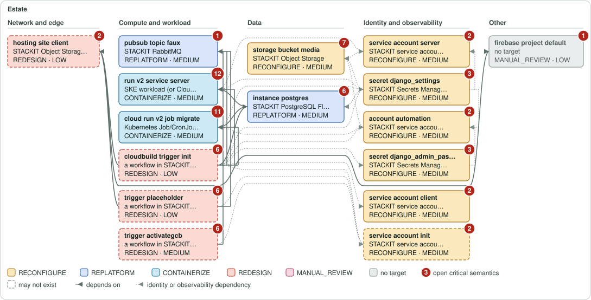
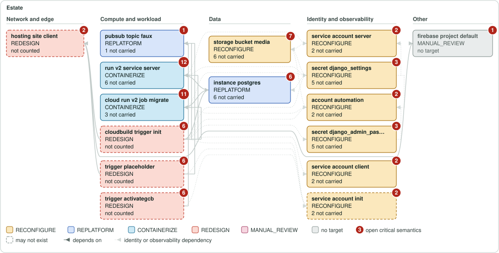
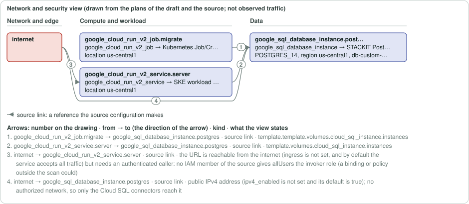
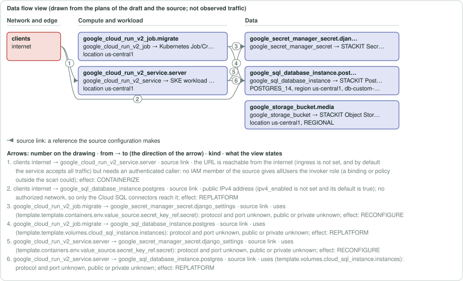

Architecture
The units of the estate and what the assessment decided for each. Class and confidence are the assessment's technical vocabulary. A unit whose evidence coverage is not traced is not a unit with nothing open: the work that is open on it is not measured here. The open work counts are never an input of the unit's class, confidence or eligibility.
Architecture drawings
Each box is a unit and each arrow a dependency, drawn from the same units and dependencies as architecture/dependencies.mmd (the file for Mermaid), with no script and nothing loaded. A scope with more than 120 units is not drawn, because a drawing of part of it would read as all of it; architecture/dependencies.mmd holds the whole graph. The drawings state what the assessment states and decide nothing.
16 units and 29 dependencies in this scope.
Source
Each box is a unit: its short name, its source type and the module call it sits in; an arrow runs from a unit to a unit it depends on, and a subnet is drawn inside the network box it depends on. The columns run from the network and edge units on the left to compute, data, and identity and observability on the right.
Source mapping view
The same source units in the same places, each relabelled with the STACKIT service the assessment proposes for it, with the class and confidence of its decision (the colour is the class; a grey box has no target). It maps the source, not the target: one unit can become several resources of the draft, none, or part of one, and the arrows are the dependencies of the source. The generated target design draws the resources of the draft. A proposal; an architect decides.

What changes
The same units in the same places, with only what the move changes: the class, whether the unit has a target at all, and how many of its properties the draft names as not carried (not counted: the unit's properties were not accounted). A faded box is a direct unit with a target and nothing not carried.

Generated target design
The source mapping view above relabels the source units. This drawing is made from the draft: each box is a resource the draft writes (a network, a network interface, a public IP, a routing table, a DNS zone, a load balancer, a server or a data store), inside the network the draft places it in, with the source units it is written from; an arrow is a reference the draft writes, directly or through a volume, interface or public IP attachment. A dashed arrow is a link the draft does not settle (one the source states, or two resources only another block of the draft names): unknown, listed below with what the source states, never a guess. Security groups, identities and the other resources of the draft are not drawn here (the line below the drawing counts them by type) (architecture/network-security.mmd and architecture/identity.mmd draw them, terraform/ holds them all).
Summary graph: 3 of 10 draft blocks drawn. The drawing is a summary, not the draft: the full list of the draft's blocks, each with the source units it comes from, is engineering/evidence-index.json, and terraform/ holds every block itself.
3 resources of the draft, written from 4 source units; 1 links, 1 of them unknown. By kind: server 1 · data-store 2.
Not drawn: 1 stackit_rabbitmq_instance, 1 stackit_secretsmanager_instance, 1 stackit_secretsmanager_user, 4 stackit_service_account (terraform/ holds them).
Links the draft does not settle
stackit_ske_cluster.containers→stackit_postgresflex_instance.postgres: unknown. google_cloud_run_v2_job.migrate refers to google_sql_database_instance.postgres (template.template.volumes.cloud_sql_instance.instances) in the source; the draft writes no reference between stackit_ske_cluster.containers and stackit_postgresflex_instance.postgres; what decides it: stackit_postgresflex_instance has a network block with an access list and a scope but no network ID of a project network (provider schema 0.120.0); network.acl and network.access_scope (PUBLIC or SNA) is its access control, so who reaches it is decided by var.postgres_allowed_cidrs, which the draft leaves without a default, which is to name the addresses the workload connects from: the pods of a drafted cluster connect from its egress_address_ranges (a computed attribute: "The outgoing network ranges (in CIDR notation) of traffic originating from workload on the cluster.", provider schema 0.120.0).
Source units and resources that are not one to one
| Mapping | Source units | Resources of the draft |
|---|---|---|
| 2 units → 1 resource | google_cloud_run_v2_job.migrate, google_cloud_run_v2_service.server | stackit_ske_cluster.containers |
Architecture views of the target
Three more views are drawn from the plans of the draft. They are Mermaid sources: text for a tool that draws Mermaid, not images. The page shows the text of the network and security view and of the data flow view below; it loads no Mermaid program and nothing else. An estate with more than 120 units in the network and security view or in the data flow view gets that file as a partition map (one box for each partition, the arrows between partitions counted, every unknown edge accounted for) and one file for each partition under architecture/partitions/, which the map names.
architecture/network-security.mmd— networks, subnets, load balancers and security groups of the targetarchitecture/identity.mmd— the identities of the source and the STACKIT identity each moves toarchitecture/data-flows.mmd— clients, load balancers, applications and data stores, with the protocol and port of each flow
The network and security view and the data flow view, drawn
The same boxes and arrows as the Mermaid files, drawn with no script; where the run wrote the drawing files beside them (architecture/network-security.svg and architecture/data-flows.svg) the page shows those files, the one copy of each drawing, and embeds none twice. Each arrow carries a number; the key under the drawing gives its two ends in the direction of the arrow and its words (protocol, port and direction of a rule or listener, the attribute of a reference). A thin grey arrow is a source link (a reference the source configuration makes), a thick dark one a target link (a path a rule, route or listener of the draft permits), a thick blue one an accepted change (a link an answer of the inputs file changed), a dashed one unknown. Nothing here is observed traffic.


The network and security view and the data flow view as text
The Mermaid text of each, as the run wrote it: readable here offline, and drawn by a Mermaid tool on your own machine. The page loads no Mermaid program.
Mermaid text of architecture/network-security.mmd: networks, subnets, load balancers and security groups of the target
%% FOR REVIEW — generated by StackToIT Assess. Architect review required before any decision.
%% What this view is: the network and security picture of the migration, drawn from the plans of the draft (security group rules, attachments, routing) and from the assessment (the references the source configuration makes). One box per source unit: its address, its source type, the STACKIT service the assessment proposes and, when a plan drafts resources from it, their addresses.
%% Arrows: a thin arrow is a reference the source configuration makes (its label is the attribute that holds it); a thick arrow is a path a rule, a route or a listener permits (direction, protocol, ports); a dashed arrow is UNKNOWN (its label says why the sources do not settle it). Nothing here is observed traffic or a verified connection, and a connection no source states is not drawn.
%% Google Cloud: a load balancer is its forwarding rule and its backend service, with the target proxy and the URL map as the label of the arrow between them. A firewall rule is the box of the rule; a thin arrow from an instance, a group manager or a cluster to it is the selection the source states by network tag or service account ("selected by target_tags web"), and the arrow says whether the draft attaches the rule's security group to that unit. A thick arrow from a range to the rule is a rule the draft drafts; a deny rule is an orange arrow, because STACKIT security groups only allow. What faces the internet is read from the load balancing scheme, the external IP of a network interface, the ingress setting and invoker of a Cloud Run service or Function, the endpoint of a GKE cluster and the public address of a Cloud SQL instance.
%% Only GCP units of a network role are drawn. architecture/dependencies.mmd holds every unit.
flowchart LR
n_google_cloud_run_v2_job_migrate["google_cloud_run_v2_job.migrate<br/><small>google_cloud_run_v2_job → Kubernetes Job/CronJob on SKE</small><br/><small>location us-central1</small>"]:::unit
n_google_cloud_run_v2_service_server["google_cloud_run_v2_service.server<br/><small>google_cloud_run_v2_service → SKE workload (or Cloud Foundry Docker app)</small><br/><small>location us-central1</small>"]:::unit
n_google_sql_database_instance_postgres["google_sql_database_instance.postgres<br/><small>google_sql_database_instance → STACKIT PostgreSQL Flex</small><br/><small>POSTGRES_14, region us-central1, db-custom-2-4096</small>"]:::unit
n_internet["internet"]:::internet
n_google_cloud_run_v2_job_migrate -->|"template.template.volumes.cloud_sql_instance.instances"| n_google_sql_database_instance_postgres
n_google_cloud_run_v2_service_server -->|"template.volumes.cloud_sql_instance.instances"| n_google_sql_database_instance_postgres
n_internet -->|"the URL is reachable from the internet (ingress is not set, and by default the service accepts all traffic) but needs an authenticated caller: no IAM member of the source gives allUsers the invoker role (a binding or policy outside the scan could)"| n_google_cloud_run_v2_service_server
n_internet -->|"public IPv4 address (ipv4_enabled is not set and its default is true); no authorized network, so only the Cloud SQL connectors reach it"| n_google_sql_database_instance_postgres
classDef unit fill:#e1e5f5,stroke:#4b5ba6
classDef synthetic fill:#f3f3f3,stroke:#566663
classDef unknown fill:#f3f3f3,stroke:#566663,stroke-dasharray:4 3
classDef manual fill:#f6e7cf,stroke:#a8650c
classDef internet fill:#f8deda,stroke:#b1261b
Mermaid text of architecture/data-flows.mmd: clients, load balancers, applications and data stores, with the protocol and port of each flow
%% FOR REVIEW — generated by StackToIT Assess. Architect review required before any decision. %% What this view is: the data flows between the clients, load balancers, applications, databases, object storage and registries of the estate, drawn from the forwarding rules and backend services of the source, the ingress settings of its serverless units, the firewall rules of the VPC and the references the source configuration makes. Each flow says its protocol and port where the source states them, whether it is public or private, and the migration effect (the class the assessment gives the unit it ends in). What the source does not state is written unknown. %% The flows are the paths a forwarding rule, a backend service or a firewall rule permits, not observed traffic. A load balancer is drawn as its forwarding rule (the clients, the protocol of its target proxy, its ports) and its backend service (the protocol and the named port it speaks to the instance groups, network endpoint groups and buckets behind it); the proxy and the URL map are the label of the arrow between them. A firewall rule is drawn between the clients and the instances it selects by network tag or service account, thick only when the draft attaches the rule's security group to the unit it filters, else dashed and saying what the draft does not do. A thin arrow is a reference from an application to a unit it uses, whose protocol and port the source does not state; a dashed arrow is UNKNOWN. A deny rule is no flow: the network and security view draws it. %% Only GCP units are drawn. architecture/dependencies.mmd holds every unit and the dependencies among them. %% 2 managed service units that no flow touches are not drawn and not counted toward the 120 units above which this view is cut into partitions: google_pubsub_topic.faux, google_secret_manager_secret.django_admin_password. architecture/dependencies.mmd holds every unit. %% A label that ends in "full reason at the end of this file" is cut at the end of a clause: the lines "Full reason of arrow N" at the end of this file, and the key of the drawn view, carry the whole reason. flowchart LR n_clients_public["clients<br/>internet"]:::internet n_google_cloud_run_v2_job_migrate["google_cloud_run_v2_job.migrate<br/><small>google_cloud_run_v2_job → Kubernetes Job/CronJob on SKE</small><br/><small>location us-central1</small>"]:::unit n_google_cloud_run_v2_service_server["google_cloud_run_v2_service.server<br/><small>google_cloud_run_v2_service → SKE workload (or Cloud Foundry Docker app)</small><br/><small>location us-central1</small>"]:::unit n_google_secret_manager_secret_django_settings["google_secret_manager_secret.django_settings<br/><small>google_secret_manager_secret → STACKIT Secrets Manager</small>"]:::unit n_google_sql_database_instance_postgres["google_sql_database_instance.postgres<br/><small>google_sql_database_instance → STACKIT PostgreSQL Flex</small><br/><small>POSTGRES_14, region us-central1, db-custom-2-4096</small>"]:::unit n_google_storage_bucket_media["google_storage_bucket.media<br/><small>google_storage_bucket → STACKIT Object Storage</small><br/><small>location us-central1, REGIONAL</small>"]:::unit n_clients_public -->|"the URL is reachable from the internet (ingress is not set, and by default the service accepts all traffic) but needs an authenticated caller: no IAM member of the source gives allUsers the invoker role (a binding or policy outside the scan could) … (full reason at the end of this file and in the key of the drawn view)"| n_google_cloud_run_v2_service_server n_clients_public -->|"public IPv4 address (ipv4_enabled is not set and its default is true); no authorized network, so only the Cloud SQL connectors reach it; effect: REPLATFORM"| n_google_sql_database_instance_postgres n_google_cloud_run_v2_job_migrate -->|"uses (template.template.containers.env.value_source.secret_key_ref.secret): protocol and port unknown, public or private unknown; effect: RECONFIGURE"| n_google_secret_manager_secret_django_settings n_google_cloud_run_v2_job_migrate -->|"uses (template.template.volumes.cloud_sql_instance.instances): protocol and port unknown, public or private unknown; effect: REPLATFORM"| n_google_sql_database_instance_postgres n_google_cloud_run_v2_service_server -->|"uses (template.containers.env.value_source.secret_key_ref.secret): protocol and port unknown, public or private unknown; effect: RECONFIGURE"| n_google_secret_manager_secret_django_settings n_google_cloud_run_v2_service_server -->|"uses (template.volumes.cloud_sql_instance.instances): protocol and port unknown, public or private unknown; effect: REPLATFORM"| n_google_sql_database_instance_postgres classDef unit fill:#e1e5f5,stroke:#4b5ba6 classDef synthetic fill:#f3f3f3,stroke:#566663 classDef unknown fill:#f3f3f3,stroke:#566663,stroke-dasharray:4 3 classDef manual fill:#f6e7cf,stroke:#a8650c classDef internet fill:#f8deda,stroke:#b1261b %% Full reason of arrow 1 (clients:public → google_cloud_run_v2_service.server): the URL is reachable from the internet (ingress is not set, and by default the service accepts all traffic) but needs an authenticated caller: no IAM member of the source gives allUsers the invoker role (a binding or policy outside the scan could); effect: CONTAINERIZE
Current, target and what changes, by application
The same three views for each application of your file and for each group StackToIT PROPOSES from the source, drawn from the same units and dependencies as the estate. A PROPOSED group is a reading of the source that nobody has confirmed: it is labelled PROPOSED here as everywhere. Choose a view above to see one of the three for every application at once.
migrate (PROPOSED — not confirmed): 3 units · NOT MIGRATION-READY
3 units and 2 dependencies in this scope.
Source
Each box is a unit: its short name, its source type and the module call it sits in; an arrow runs from a unit to a unit it depends on, and a subnet is drawn inside the network box it depends on. The columns run from the network and edge units on the left to compute, data, and identity and observability on the right.
Source mapping view
The same source units in the same places, each relabelled with the STACKIT service the assessment proposes for it, with the class and confidence of its decision (the colour is the class; a grey box has no target). It maps the source, not the target: one unit can become several resources of the draft, none, or part of one, and the arrows are the dependencies of the source. The generated target design draws the resources of the draft. A proposal; an architect decides.
What changes
The same units in the same places, with only what the move changes: the class, whether the unit has a target at all, and how many of its properties the draft names as not carried (not counted: the unit's properties were not accounted). A faded box is a direct unit with a target and nothing not carried.
server (PROPOSED — not confirmed): 2 units · NOT MIGRATION-READY
2 units and 1 dependencies in this scope.
Source
Each box is a unit: its short name, its source type and the module call it sits in; an arrow runs from a unit to a unit it depends on, and a subnet is drawn inside the network box it depends on. The columns run from the network and edge units on the left to compute, data, and identity and observability on the right.
Source mapping view
The same source units in the same places, each relabelled with the STACKIT service the assessment proposes for it, with the class and confidence of its decision (the colour is the class; a grey box has no target). It maps the source, not the target: one unit can become several resources of the draft, none, or part of one, and the arrows are the dependencies of the source. The generated target design draws the resources of the draft. A proposal; an architect decides.
What changes
The same units in the same places, with only what the move changes: the class, whether the unit has a target at all, and how many of its properties the draft names as not carried (not counted: the unit's properties were not accounted). A faded box is a direct unit with a target and nothing not carried.
| Unit | Type | Exists | Counted in totals | Class | Confidence | Blocker categories | Findings | Automation-eligible (property gate) | Evidence coverage | Open work | From the source to the draft |
|---|---|---|---|---|---|---|---|---|---|---|---|
google_cloud_run_v2_job.migrate drawing |
google_cloud_run_v2_job | Exists | Yes | CONTAINERIZE | MEDIUM | 2 | 3 | No | not traced: the draft holds its block, but no trace producer covers its family in this build | 1 open decision · 0 manual actions |
|
google_cloud_run_v2_service.server drawing |
google_cloud_run_v2_service | Exists | Yes | CONTAINERIZE | MEDIUM | 3 | 4 | No | not traced: the draft holds its block, but no trace producer covers its family in this build | 1 open decision · 0 manual actions |
|
google_cloudbuild_trigger.activategcb drawing |
google_cloudbuild_trigger | Decided at plan time | No | REDESIGN | MEDIUM | 2 | 2 | No | not traced: decided only when OpenTofu plans, and the generator that would write it records no intent or plan | 2 open decisions · 0 manual actions |
|
google_cloudbuild_trigger.init drawing |
google_cloudbuild_trigger | Decided at plan time | No | REDESIGN | LOW | 2 | 6 | No | not traced: decided only when OpenTofu plans, and the generator that would write it records no intent or plan | 2 open decisions · 0 manual actions |
|
google_cloudbuild_trigger.placeholder drawing |
google_cloudbuild_trigger | Decided at plan time | No | REDESIGN | LOW | 2 | 3 | No | not traced: decided only when OpenTofu plans, and the generator that would write it records no intent or plan | 2 open decisions · 0 manual actions |
|
google_firebase_hosting_site.client drawing |
google_firebase_hosting_site | Decided at plan time | No | REDESIGN | LOW | 2 | 2 | No | not traced: decided only when OpenTofu plans, and the generator that would write it records no intent or plan | 1 open decision · 0 manual actions |
|
google_firebase_project.default drawing |
google_firebase_project | Exists | Yes | MANUAL_REVIEW | LOW | 1 | 1 | No | not traced: the draft holds no block for it (it needs no resource of its own, or it is left to the architect): nothing to trace | not measured |
|
google_pubsub_topic.faux drawing |
google_pubsub_topic | Exists | Yes | REPLATFORM | MEDIUM | 2 | 1 | No | TRACED FROM RECORDED LINES | 2 open steps · 1 open decision · 0 manual actions |
|
google_secret_manager_secret.django_admin_password drawing |
google_secret_manager_secret | Exists | Yes | RECONFIGURE | MEDIUM | 2 | 2 | No | TRACED FROM RECORDED LINES | 2 open steps · 2 open decisions · 0 manual actions |
|
google_secret_manager_secret.django_settings drawing |
google_secret_manager_secret | Exists | Yes | RECONFIGURE | MEDIUM | 2 | 2 | No | TRACED FROM RECORDED LINES | 2 open steps · 2 open decisions · 0 manual actions |
|
google_service_account.automation drawing |
google_service_account | Exists | Yes | RECONFIGURE | MEDIUM | 2 | 2 | No | not traced: the draft holds its block, but no trace producer covers its family in this build | not measured |
|
google_service_account.client drawing |
google_service_account | Exists | Yes | RECONFIGURE | MEDIUM | 2 | 2 | No | TRACED FROM RECORDED LINES | 2 open steps |
|
google_service_account.init drawing |
google_service_account | Decided at plan time | No | RECONFIGURE | MEDIUM | 2 | 2 | No | TRACED FROM RECORDED LINES | 2 open steps |
|
google_service_account.server drawing |
google_service_account | Exists | Yes | RECONFIGURE | MEDIUM | 2 | 2 | No | not traced: the draft holds its block, but no trace producer covers its family in this build | not measured |
|
google_sql_database_instance.postgres drawing |
google_sql_database_instance | Exists | Yes | REPLATFORM | MEDIUM | 2 | 3 | No | TRACED FROM RECORDED LINES | 2 open steps · 3 open decisions · 0 manual actions |
|
google_storage_bucket.media drawing |
google_storage_bucket | Exists | Yes | RECONFIGURE | MEDIUM | 2 | 4 | No | TRACED FROM RECORDED LINES | 2 open steps · 3 open decisions · 0 manual actions |
|
Open work for this resource
Open work for this resource google_cloud_run_v2_job.migrate: 6 open records · 0 accepted · blocks automation.
- plan decision: DEC-GEN-CONVERT-SOURCE-REGION-MAPPING
- critical semantic review: DEC-IAM-GOOGLE-CLOUD-RUN-V2-JOB-MIGRATE, DEC-NET-GOOGLE-CLOUD-RUN-V2-JOB-MIGRATE, DEC-OPS-GOOGLE-CLOUD-RUN-V2-JOB-MIGRATE, DEC-SEC-GOOGLE-CLOUD-RUN-V2-JOB-MIGRATE
- plan statement: DEC-IAM-STACKITSA-STATEMENT-MANUAL-REVIEW
Next step: Decide "source region mapping" (DEC-GEN-CONVERT-SOURCE-REGION-MAPPING): the plan of the draft leaves it open.
Open work for this resource google_cloud_run_v2_service.server: 7 open records · 0 accepted · blocks automation.
- plan decision: DEC-GEN-CONVERT-SOURCE-REGION-MAPPING
- critical semantic review: DEC-GEN-GOOGLE-CLOUD-RUN-V2-SERVICE-SERVER, DEC-IAM-GOOGLE-CLOUD-RUN-V2-SERVICE-SERVER, DEC-NET-GOOGLE-CLOUD-RUN-V2-SERVICE-SERVER, DEC-OPS-GOOGLE-CLOUD-RUN-V2-SERVICE-SERVER, DEC-SEC-GOOGLE-CLOUD-RUN-V2-SERVICE-SERVER
- plan statement: DEC-IAM-STACKITSA-STATEMENT-MANUAL-REVIEW
Next step: Decide "source region mapping" (DEC-GEN-CONVERT-SOURCE-REGION-MAPPING): the plan of the draft leaves it open.
Open work for this resource google_cloudbuild_trigger.activategcb: 4 open records · 0 accepted · blocks automation.
- plan decision: DEC-GEN-CONVERT-PROPOSED-ALTERNATIVE, DEC-GEN-CONVERT-SOURCE-PROJECT-MAPPING
- critical semantic review: DEC-IAM-GOOGLE-CLOUDBUILD-TRIGGER-ACTIVATEGCB, DEC-OPS-GOOGLE-CLOUDBUILD-TRIGGER-ACTIVATEGCB
Next step: Decide "proposed alternative" (DEC-GEN-CONVERT-PROPOSED-ALTERNATIVE): the plan of the draft leaves it open.
Open work for this resource google_cloudbuild_trigger.init: 4 open records · 0 accepted · blocks automation.
- plan decision: DEC-GEN-CONVERT-PROPOSED-ALTERNATIVE, DEC-GEN-CONVERT-SOURCE-PROJECT-MAPPING
- critical semantic review: DEC-IAM-GOOGLE-CLOUDBUILD-TRIGGER-INIT, DEC-OPS-GOOGLE-CLOUDBUILD-TRIGGER-INIT
Next step: Decide "proposed alternative" (DEC-GEN-CONVERT-PROPOSED-ALTERNATIVE): the plan of the draft leaves it open.
Open work for this resource google_cloudbuild_trigger.placeholder: 5 open records · 0 accepted · blocks automation.
- plan decision: DEC-GEN-CONVERT-PROPOSED-ALTERNATIVE, DEC-GEN-CONVERT-SOURCE-PROJECT-MAPPING
- critical semantic review: DEC-GEN-GOOGLE-CLOUDBUILD-TRIGGER-PLACEHOLDER, DEC-IAM-GOOGLE-CLOUDBUILD-TRIGGER-PLACEHOLDER, DEC-OPS-GOOGLE-CLOUDBUILD-TRIGGER-PLACEHOLDER
Next step: Decide "proposed alternative" (DEC-GEN-CONVERT-PROPOSED-ALTERNATIVE): the plan of the draft leaves it open.
Open work for this resource google_firebase_hosting_site.client: 3 open records · 0 accepted · blocks automation.
- plan decision: DEC-GEN-CONVERT-PROPOSED-ALTERNATIVE
- critical semantic review: DEC-IAM-GOOGLE-FIREBASE-HOSTING-SITE-CLIENT, DEC-OPS-GOOGLE-FIREBASE-HOSTING-SITE-CLIENT
Next step: Decide "proposed alternative" (DEC-GEN-CONVERT-PROPOSED-ALTERNATIVE): the plan of the draft leaves it open.
Open work for this resource google_firebase_project.default: 1 open record · 0 accepted · blocks automation.
- critical semantic review: DEC-IAM-GOOGLE-FIREBASE-PROJECT-DEFAULT
Next step: Review the critical settings of google_firebase_project.default (DEC-IAM-GOOGLE-FIREBASE-PROJECT-DEFAULT): decide each or accept the difference.
Open work for this resource google_pubsub_topic.faux: 2 open records · 0 accepted · blocks automation.
- plan decision: DEC-GEN-CONVERT-API-OPT-IN
- critical semantic review: DEC-OPS-GOOGLE-PUBSUB-TOPIC-FAUX
Next step: Decide "api opt in" (DEC-GEN-CONVERT-API-OPT-IN): the plan of the draft leaves it open.
Open work for this resource google_secret_manager_secret.django_admin_password: 4 open records · 0 accepted · blocks automation.
- plan decision: DEC-GEN-CONVERT-API-OPT-IN, DEC-GEN-CONVERT-PROPOSED-ALTERNATIVE
- critical semantic review: DEC-IAM-GOOGLE-SECRET-MANAGER-SECRET-DJANGO-ADMIN-PASSWORD, DEC-SEC-GOOGLE-SECRET-MANAGER-SECRET-DJANGO-ADMIN-PASSWORD
Next step: Decide "api opt in" (DEC-GEN-CONVERT-API-OPT-IN): the plan of the draft leaves it open.
Open work for this resource google_secret_manager_secret.django_settings: 4 open records · 0 accepted · blocks automation.
- plan decision: DEC-GEN-CONVERT-API-OPT-IN, DEC-GEN-CONVERT-PROPOSED-ALTERNATIVE
- critical semantic review: DEC-IAM-GOOGLE-SECRET-MANAGER-SECRET-DJANGO-SETTINGS, DEC-SEC-GOOGLE-SECRET-MANAGER-SECRET-DJANGO-SETTINGS
Next step: Decide "api opt in" (DEC-GEN-CONVERT-API-OPT-IN): the plan of the draft leaves it open.
Open work for this resource google_service_account.automation: 2 open records · 0 accepted · blocks automation.
- critical semantic review: DEC-IAM-GOOGLE-SERVICE-ACCOUNT-AUTOMATION
- plan statement: DEC-IAM-STACKITSA-STATEMENT-NOT-DRAFTED
Next step: Review the critical settings of google_service_account.automation (DEC-IAM-GOOGLE-SERVICE-ACCOUNT-AUTOMATION): decide each or accept the difference.
Open work for this resource google_service_account.client: 1 open record · 0 accepted · blocks automation.
- critical semantic review: DEC-IAM-GOOGLE-SERVICE-ACCOUNT-CLIENT
Next step: Review the critical settings of google_service_account.client (DEC-IAM-GOOGLE-SERVICE-ACCOUNT-CLIENT): decide each or accept the difference.
Open work for this resource google_service_account.init: 1 open record · 0 accepted · blocks automation.
- critical semantic review: DEC-IAM-GOOGLE-SERVICE-ACCOUNT-INIT
Next step: Review the critical settings of google_service_account.init (DEC-IAM-GOOGLE-SERVICE-ACCOUNT-INIT): decide each or accept the difference.
Open work for this resource google_service_account.server: 2 open records · 0 accepted · blocks automation.
- critical semantic review: DEC-IAM-GOOGLE-SERVICE-ACCOUNT-SERVER
- plan statement: DEC-IAM-STACKITSA-STATEMENT-NOT-DRAFTED
Next step: Review the critical settings of google_service_account.server (DEC-IAM-GOOGLE-SERVICE-ACCOUNT-SERVER): decide each or accept the difference.
Open work for this resource google_sql_database_instance.postgres: 6 open records · 0 accepted · blocks automation.
- plan decision: DEC-GEN-CONVERT-DATA-MOVEMENT, DEC-GEN-CONVERT-SOURCE-PROJECT-MAPPING, DEC-GEN-CONVERT-SOURCE-REGION-MAPPING
- critical semantic review: DEC-IAM-GOOGLE-SQL-DATABASE-INSTANCE-POSTGRES, DEC-NET-GOOGLE-SQL-DATABASE-INSTANCE-POSTGRES, DEC-OPS-GOOGLE-SQL-DATABASE-INSTANCE-POSTGRES
Next step: Decide "data movement" (DEC-GEN-CONVERT-DATA-MOVEMENT): the plan of the draft leaves it open.
Open work for this resource google_storage_bucket.media: 7 open records · 0 accepted · blocks automation.
- plan decision: DEC-GEN-CONVERT-PROPOSED-ALTERNATIVE, DEC-GEN-CONVERT-SOURCE-REGION-MAPPING
- critical semantic review: DEC-DATA-GOOGLE-STORAGE-BUCKET-MEDIA, DEC-GEN-GOOGLE-STORAGE-BUCKET-MEDIA, DEC-IAM-GOOGLE-STORAGE-BUCKET-MEDIA, DEC-OPS-GOOGLE-STORAGE-BUCKET-MEDIA, DEC-SEC-GOOGLE-STORAGE-BUCKET-MEDIA
Next step: Decide "proposed alternative" (DEC-GEN-CONVERT-PROPOSED-ALTERNATIVE): the plan of the draft leaves it open.
Deployment prerequisites
google_cloud_run_v2_job.migrate: passed StackToIT's own draft checks; tofu validate: PASSED; NOT deployment-ready: 1 open decisions, 0 manual actions
- decision
DEC-GEN-CONVERT-SOURCE-REGION-MAPPING(aliasconvert:estate:source_location:SOURCE_REGION_MAPPING): Map each source location of the estate to a STACKIT region · The source places its units in a location the scan cannot read (the value comes from an input a plan can change, or the source does not state it). No mapping between Google and STACKIT regions is evidenced, so the region the draft builds in is not shown to hold the residency of a source location: a person states it once for the estate, by answering target.region.source_location for each location.
google_cloud_run_v2_service.server: passed StackToIT's own draft checks; tofu validate: PASSED; NOT deployment-ready: 1 open decisions, 0 manual actions
- decision
DEC-GEN-CONVERT-SOURCE-REGION-MAPPING(aliasconvert:estate:source_location:SOURCE_REGION_MAPPING): Map each source location of the estate to a STACKIT region · The source places its units in a location the scan cannot read (the value comes from an input a plan can change, or the source does not state it). No mapping between Google and STACKIT regions is evidenced, so the region the draft builds in is not shown to hold the residency of a source location: a person states it once for the estate, by answering target.region.source_location for each location.
google_cloudbuild_trigger.activategcb: passed StackToIT's own draft checks; tofu validate: PASSED; NOT deployment-ready: 2 open decisions, 0 manual actions
- decision
DEC-GEN-CONVERT-SOURCE-PROJECT-MAPPING(aliasconvert:estate:source_project:SOURCE_PROJECT_MAPPING): State where the units of each source project of the estate go · The source places its units in the project example-project, and in a project the scan cannot read for some units, and the source project is carried nowhere. A person maps the source projects by answering target.project.source_project for each: var.project_id, or the project of the unit's network (network-project). The answer records that mapping and changes nothing in the draft, which keeps its own project resolver. - decision
DEC-GEN-CONVERT-PROPOSED-ALTERNATIVE/google_cloudbuild_trigger.activategcb(aliasconvert:google_cloudbuild_trigger.activategcb:proposal:PROPOSED_ALTERNATIVE): Decide whether the proposed STACKIT alternative replaces google_cloudbuild_trigger.activategcb: read the module proposals/proposal_activategcb, accept the difference and set its values, or design it another way · the target has no equal of this Cloud Build trigger: starts a build on a source event, a Pub/Sub message, a webhook or by hand, with its steps, substitutions, artifacts, secrets and optional approval: Nothing is converted. The same delivery is a workflow of STACKIT Git Pipelines (written for GitHub Actions; STACKIT-managed or custom runners; secrets from Secrets Manager or the repository; a manual-approval action) or the customer's own CI/CD. Trigger conditions, steps, secrets (created again, never copied), the service account (replaced by the credentials the workflow uses against STACKIT), the log destination and the approval are written again by a person. To decide: Which pipelines are still needed, where they run (STACKIT Git Pipelines or the customer's own CI/CD), how each trigger, step, secret and approval is written again, and who owns the workflow files.
google_cloudbuild_trigger.init: passed StackToIT's own draft checks; tofu validate: PASSED; NOT deployment-ready: 2 open decisions, 0 manual actions
- decision
DEC-GEN-CONVERT-SOURCE-PROJECT-MAPPING(aliasconvert:estate:source_project:SOURCE_PROJECT_MAPPING): State where the units of each source project of the estate go · The source places its units in the project example-project, and in a project the scan cannot read for some units, and the source project is carried nowhere. A person maps the source projects by answering target.project.source_project for each: var.project_id, or the project of the unit's network (network-project). The answer records that mapping and changes nothing in the draft, which keeps its own project resolver. - decision
DEC-GEN-CONVERT-PROPOSED-ALTERNATIVE/google_cloudbuild_trigger.init(aliasconvert:google_cloudbuild_trigger.init:proposal:PROPOSED_ALTERNATIVE): Decide whether the proposed STACKIT alternative replaces google_cloudbuild_trigger.init: read the module proposals/proposal_init, accept the difference and set its values, or design it another way · the target has no equal of this Cloud Build trigger: starts a build on a source event, a Pub/Sub message, a webhook or by hand, with its steps, substitutions, artifacts, secrets and optional approval: Nothing is converted. The same delivery is a workflow of STACKIT Git Pipelines (written for GitHub Actions; STACKIT-managed or custom runners; secrets from Secrets Manager or the repository; a manual-approval action) or the customer's own CI/CD. Trigger conditions, steps, secrets (created again, never copied), the service account (replaced by the credentials the workflow uses against STACKIT), the log destination and the approval are written again by a person. To decide: Which pipelines are still needed, where they run (STACKIT Git Pipelines or the customer's own CI/CD), how each trigger, step, secret and approval is written again, and who owns the workflow files.
google_cloudbuild_trigger.placeholder: passed StackToIT's own draft checks; tofu validate: PASSED; NOT deployment-ready: 2 open decisions, 0 manual actions
- decision
DEC-GEN-CONVERT-SOURCE-PROJECT-MAPPING(aliasconvert:estate:source_project:SOURCE_PROJECT_MAPPING): State where the units of each source project of the estate go · The source places its units in the project example-project, and in a project the scan cannot read for some units, and the source project is carried nowhere. A person maps the source projects by answering target.project.source_project for each: var.project_id, or the project of the unit's network (network-project). The answer records that mapping and changes nothing in the draft, which keeps its own project resolver. - decision
DEC-GEN-CONVERT-PROPOSED-ALTERNATIVE/google_cloudbuild_trigger.placeholder(aliasconvert:google_cloudbuild_trigger.placeholder:proposal:PROPOSED_ALTERNATIVE): Decide whether the proposed STACKIT alternative replaces google_cloudbuild_trigger.placeholder: read the module proposals/proposal_placeholder, accept the difference and set its values, or design it another way · the target has no equal of this Cloud Build trigger: starts a build on a source event, a Pub/Sub message, a webhook or by hand, with its steps, substitutions, artifacts, secrets and optional approval: Nothing is converted. The same delivery is a workflow of STACKIT Git Pipelines (written for GitHub Actions; STACKIT-managed or custom runners; secrets from Secrets Manager or the repository; a manual-approval action) or the customer's own CI/CD. Trigger conditions, steps, secrets (created again, never copied), the service account (replaced by the credentials the workflow uses against STACKIT), the log destination and the approval are written again by a person. To decide: Which pipelines are still needed, where they run (STACKIT Git Pipelines or the customer's own CI/CD), how each trigger, step, secret and approval is written again, and who owns the workflow files.
google_firebase_hosting_site.client: passed StackToIT's own draft checks; tofu validate: PASSED; NOT deployment-ready: 1 open decisions, 0 manual actions
- decision
DEC-GEN-CONVERT-PROPOSED-ALTERNATIVE/google_firebase_hosting_site.client(aliasconvert:google_firebase_hosting_site.client:proposal:PROPOSED_ALTERNATIVE): Decide whether the proposed STACKIT alternative replaces google_firebase_hosting_site.client: read the module proposals/proposal_client, accept the difference and set its values, or design it another way · the target has no equal of this static web hosting site: Static files are published into an Object Storage bucket by a pipeline, and a CDN distribution (a beta resource) with the bucket as origin serves them on a custom domain; the redirects of the site become redirect rules of the distribution. Custom response headers, rewrites to Cloud Run services or Cloud Functions, preview channels and the release history have no counterpart and are restated in the pipeline or in the application. To decide: Which bucket is the origin, which domain the distribution serves, and how rewrites and previews are replaced. The CDN resources are beta.
google_pubsub_topic.faux: passed StackToIT's own draft checks; tofu validate: PASSED; NOT deployment-ready: 1 open decisions, 0 manual actions
- decision
DEC-GEN-CONVERT-API-OPT-IN/google_pubsub_topic.faux(aliasconvert:api:pubsub:v1beta:beta:API_OPT_IN): Allow calls of the beta pubsub API v1beta for this migration (the API may change or vanish)? Accept: the pubsub API v1beta path is carried out for google_pubsub_topic.faux: its calls become executable. the RabbitMQ instance the draft writes stays in the draft this run wrote, so its step is held (REGENERATE_REQUIRED) until a draft is generated without it (answer target.messaging.path with pubsub in the inputs file and run again); an instance shared with a queue or topic that has no call of the pubsub API v1beta path stays taken. Refuse: the RabbitMQ instance the draft writes is carried out and the calls and steps of the pubsub API v1beta path are not taken. · the pubsub API v1beta is beta: the execution plan executes no call of an API that is not generally available without an explicit opt-in, so the calls of it and the steps of its path for google_pubsub_topic.faux wait for this decision; the draft's own blocks do not
google_secret_manager_secret.django_admin_password: passed StackToIT's own draft checks; tofu validate: PASSED; NOT deployment-ready: 2 open decisions, 0 manual actions
- decision
DEC-GEN-CONVERT-API-OPT-IN/google_secret_manager_secret.django_admin_password(aliasconvert:api:secrets-manager-vault:v1:unknown:API_OPT_IN): Allow calls of the Secrets Manager Vault-compatible API, whose maturity is not established, for this migration (the API may change or vanish)? Accept: the calls of the Secrets Manager Vault-compatible API (WriteSecret) are carried out for google_secret_manager_secret.django_admin_password, google_secret_manager_secret.django_settings. Refuse: no call is made, a refusal selects no other path (the draft holds no other carrier of what the calls set), and what they set stays open for google_secret_manager_secret.django_admin_password, google_secret_manager_secret.django_settings. · the Secrets Manager Vault-compatible API is of a maturity that is not established (its documentation states no release status and its product documentation does not establish it as generally available): the execution plan executes no call of an API that is not generally available without an explicit opt-in, so the calls of it and the steps of its path for google_secret_manager_secret.django_admin_password, google_secret_manager_secret.django_settings wait for this decision; the draft's own blocks do not - decision
DEC-GEN-CONVERT-PROPOSED-ALTERNATIVE/google_secret_manager_secret_iam_binding.django_admin_password(aliasconvert:google_secret_manager_secret_iam_binding.django_admin_password:proposal:PROPOSED_ALTERNATIVE): Decide whether the proposed STACKIT alternative replaces google_secret_manager_secret_iam_binding.django_admin_password: read the module proposals/proposal_django_admin_password, accept the difference and set its values, or design it another way · the target has no equal of this the members of one role on the Secret Manager secret: A STACKIT role assignment is not a grant on the Secret Manager secret. It gives one user, group or service account one STACKIT role on a whole project, folder or organisation. The role is a set of STACKIT permissions, not the Google role, and no table maps one to the other. It has no condition and no public member, so what the grant gave to a Google group, a domain, a federated identity or everyone is named again, and the access reaches more than the Secret Manager secret. A binding on a secret group applies to every secret in the group, so it is wider than a grant on one secret unless the secret has a group of its own, and its roles are Secrets Manager roles. The binding was authoritative for its role: STACKIT role assignments are additive, so a person who holds the role through another assignment keeps it, and removing such people is a step of a person. To decide: Which STACKIT role, on which project, folder or organisation, gives the same people the access they need on the Secret Manager secret, knowing it covers everything in that scope; which STACKIT users, groups or service accounts take the place of Google groups, domains, federated identities and a public member; and whether the grant ends with the Secret Manager secret when it has no replacement. For secrets: which secret group holds the secret, who else shares that group, and which Secrets Manager role and subject take the grant. Whether people who hold the role through another assignment keep it. The draft of google_secret_manager_secret.django_admin_password stands as it is: this answer decides the module and nothing of that draft.
google_secret_manager_secret.django_settings: passed StackToIT's own draft checks; tofu validate: PASSED; NOT deployment-ready: 2 open decisions, 0 manual actions
- decision
DEC-GEN-CONVERT-API-OPT-IN/google_secret_manager_secret.django_admin_password(aliasconvert:api:secrets-manager-vault:v1:unknown:API_OPT_IN): Allow calls of the Secrets Manager Vault-compatible API, whose maturity is not established, for this migration (the API may change or vanish)? Accept: the calls of the Secrets Manager Vault-compatible API (WriteSecret) are carried out for google_secret_manager_secret.django_admin_password, google_secret_manager_secret.django_settings. Refuse: no call is made, a refusal selects no other path (the draft holds no other carrier of what the calls set), and what they set stays open for google_secret_manager_secret.django_admin_password, google_secret_manager_secret.django_settings. · the Secrets Manager Vault-compatible API is of a maturity that is not established (its documentation states no release status and its product documentation does not establish it as generally available): the execution plan executes no call of an API that is not generally available without an explicit opt-in, so the calls of it and the steps of its path for google_secret_manager_secret.django_admin_password, google_secret_manager_secret.django_settings wait for this decision; the draft's own blocks do not - decision
DEC-GEN-CONVERT-PROPOSED-ALTERNATIVE/google_secret_manager_secret_iam_binding.django_settings(aliasconvert:google_secret_manager_secret_iam_binding.django_settings:proposal:PROPOSED_ALTERNATIVE): Decide whether the proposed STACKIT alternative replaces google_secret_manager_secret_iam_binding.django_settings: read the module proposals/proposal_django_settings, accept the difference and set its values, or design it another way · the target has no equal of this the members of one role on the Secret Manager secret: A STACKIT role assignment is not a grant on the Secret Manager secret. It gives one user, group or service account one STACKIT role on a whole project, folder or organisation. The role is a set of STACKIT permissions, not the Google role, and no table maps one to the other. It has no condition and no public member, so what the grant gave to a Google group, a domain, a federated identity or everyone is named again, and the access reaches more than the Secret Manager secret. A binding on a secret group applies to every secret in the group, so it is wider than a grant on one secret unless the secret has a group of its own, and its roles are Secrets Manager roles. The binding was authoritative for its role: STACKIT role assignments are additive, so a person who holds the role through another assignment keeps it, and removing such people is a step of a person. To decide: Which STACKIT role, on which project, folder or organisation, gives the same people the access they need on the Secret Manager secret, knowing it covers everything in that scope; which STACKIT users, groups or service accounts take the place of Google groups, domains, federated identities and a public member; and whether the grant ends with the Secret Manager secret when it has no replacement. For secrets: which secret group holds the secret, who else shares that group, and which Secrets Manager role and subject take the grant. Whether people who hold the role through another assignment keep it. The draft of google_secret_manager_secret.django_settings stands as it is: this answer decides the module and nothing of that draft.
google_sql_database_instance.postgres: passed StackToIT's own draft checks; tofu validate: PASSED; NOT deployment-ready: 3 open decisions, 0 manual actions
- decision
DEC-GEN-CONVERT-SOURCE-REGION-MAPPING(aliasconvert:estate:source_location:SOURCE_REGION_MAPPING): Map each source location of the estate to a STACKIT region · The source places its units in a location the scan cannot read (the value comes from an input a plan can change, or the source does not state it). No mapping between Google and STACKIT regions is evidenced, so the region the draft builds in is not shown to hold the residency of a source location: a person states it once for the estate, by answering target.region.source_location for each location. - decision
DEC-GEN-CONVERT-SOURCE-PROJECT-MAPPING(aliasconvert:estate:source_project:SOURCE_PROJECT_MAPPING): State where the units of each source project of the estate go · The source places its units in the project example-project, and in a project the scan cannot read for some units, and the source project is carried nowhere. A person maps the source projects by answering target.project.source_project for each: var.project_id, or the project of the unit's network (network-project). The answer records that mapping and changes nothing in the draft, which keeps its own project resolver. - decision
DEC-GEN-CONVERT-DATA-MOVEMENT(aliasconvert:google_sql_database_instance.postgres:data:DATA_MOVEMENT): Choose how the data of google_sql_database_instance.postgres moves from google_sql_database_instance to PostgreSQL Flex (stackit_postgresflex_instance.postgres): a dump restored inside the write freeze, the engine's logical replication, or a tool of your own · the plan defines both methods of the engine (a dump restored inside the write freeze, and a logical replication that follows the changes until the freeze) and keeps them open: which one applies depends on the size of the data, the write rate and the downtime the business accepts, and the source states none of them; the steps of the methods wait for the answer
google_storage_bucket.media: passed StackToIT's own draft checks; tofu validate: PASSED; NOT deployment-ready: 2 open decisions (3 questions), 0 manual actions
- decision
DEC-GEN-CONVERT-SOURCE-REGION-MAPPING(aliasconvert:estate:source_location:SOURCE_REGION_MAPPING): Map each source location of the estate to a STACKIT region · The source places its units in a location the scan cannot read (the value comes from an input a plan can change, or the source does not state it). No mapping between Google and STACKIT regions is evidenced, so the region the draft builds in is not shown to hold the residency of a source location: a person states it once for the estate, by answering target.region.source_location for each location. - decision
DEC-GEN-CONVERT-PROPOSED-ALTERNATIVE/google_storage_bucket_iam_member.automation(aliasconvert:google_storage_bucket_iam_member.automation:proposal:PROPOSED_ALTERNATIVE): Decide whether the proposed STACKIT alternative replaces google_storage_bucket_iam_member.automation: read the module proposals/proposal_automation, accept the difference and set its values, or design it another way · the target has no equal of this one member's role on the Cloud Storage bucket: A STACKIT credentials group is not a grant on the Cloud Storage bucket. It is the principal that a bucket policy names, a set of S3 keys with no Google identity behind it, and by itself it gives no access to the bucket and takes none away. The statement that grants it something is a statement of the bucket policy, in the policy language of STACKIT (a credentials group or * as the principal, S3 actions, five condition keys), which no Terraform resource sets. The Google role is not mapped to S3 actions by any table, the condition of the grant has no counterpart unless it can be written with those five condition keys, and a Google group, a domain, a federated identity and allUsers or allAuthenticatedUsers are named again as credentials groups or as *. To decide: Which credentials group stands for each member of the grant, which S3 actions of the bucket policy give the same people the access they need and no more than the Google role gave, what becomes of the condition, of public members (allUsers, allAuthenticatedUsers), of Google groups, domains and federated identities, and whether the grant ends with the Cloud Storage bucket when it has no replacement. Which bucket the grant is on, because the scan does not hold it. The draft of google_storage_bucket.media stands as it is: this answer decides the module and nothing of that draft. - decision
DEC-GEN-CONVERT-PROPOSED-ALTERNATIVE/google_storage_bucket_iam_member.server(aliasconvert:google_storage_bucket_iam_member.server:proposal:PROPOSED_ALTERNATIVE): Decide whether the proposed STACKIT alternative replaces google_storage_bucket_iam_member.server: read the module proposals/proposal_server, accept the difference and set its values, or design it another way · the target has no equal of this one member's role on the Cloud Storage bucket: A STACKIT credentials group is not a grant on the Cloud Storage bucket. It is the principal that a bucket policy names, a set of S3 keys with no Google identity behind it, and by itself it gives no access to the bucket and takes none away. The statement that grants it something is a statement of the bucket policy, in the policy language of STACKIT (a credentials group or * as the principal, S3 actions, five condition keys), which no Terraform resource sets. The Google role is not mapped to S3 actions by any table, the condition of the grant has no counterpart unless it can be written with those five condition keys, and a Google group, a domain, a federated identity and allUsers or allAuthenticatedUsers are named again as credentials groups or as *. To decide: Which credentials group stands for each member of the grant, which S3 actions of the bucket policy give the same people the access they need and no more than the Google role gave, what becomes of the condition, of public members (allUsers, allAuthenticatedUsers), of Google groups, domains and federated identities, and whether the grant ends with the Cloud Storage bucket when it has no replacement. Which bucket the grant is on, because the scan does not hold it. The draft of google_storage_bucket.media stands as it is: this answer decides the module and nothing of that draft.